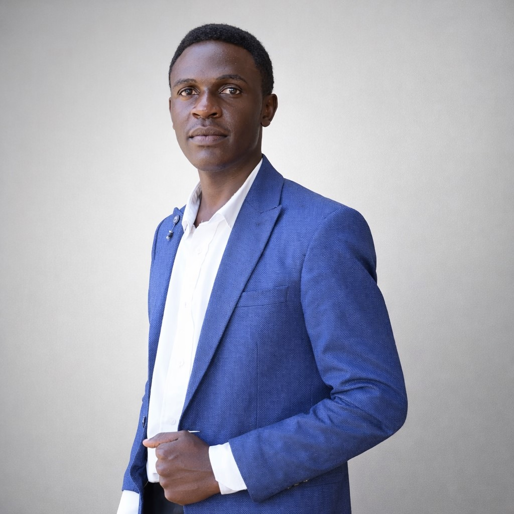

Audio Engineering
Supporting clean and reliable sound workflows in live church environments with attention to clarity, balance, and continuity.
I am a software engineering student and digital production specialist based in Uganda, focused on structured solutions that are functional, scalable, and purposeful. I work where technology, media, and service intersect.

My growth path is deliberate. I design with clarity, build with discipline, and document for continuity so that every project can remain useful, maintainable, and scalable over time.
I am currently pursuing a Professional Certificate in Software Engineering at Victoria University Kampala, Institute of Advanced Technical Studies.
Beyond software, I bring hands-on operational value from church media environments, where precision, timing, teamwork, and consistency matter in real live settings.
My interest is not only in making things look good, but in building systems that work well, grow well, and serve people well.
Structured web development and digital systems thinking.
Live production support, audio handling, and stream coordination.
Purpose-led execution with continuity and reliability in mind.
I am developing strong technical foundations while positioning myself to build useful digital platforms, improve operational workflows, and contribute to systems that support communities and ministry environments with excellence.
My profile combines technical growth with practical media execution. The result is a working blend of engineering discipline and hands-on digital support.
Supporting clean and reliable sound workflows in live church environments with attention to clarity, balance, and continuity.
Coordinating stream preparation and execution to help digital broadcasts run in an organized and dependable manner.
Supporting structured media operations by improving task flow, role clarity, and consistent execution across production processes.
Building clean interfaces with HTML and CSS that adapt well across screen sizes while maintaining clarity and visual balance.
Looking beyond isolated tasks to structure repeatable, maintainable, and scalable solutions with long-term usability in mind.
Advancing steadily in software engineering with a growth strategy centered on fundamentals, practical application, and disciplined improvement.
My experience is grounded in practical responsibility, especially in church media operations where consistency and reliability directly affect service delivery.
Contributing to media support functions including audio handling, livestream setup, and workflow coordination. This environment strengthened my operational discipline, teamwork, and attention to detail under live conditions.
Pursuing formal software engineering training at Victoria University Kampala, Institute of Advanced Technical Studies, with active growth in structured web development and technical problem-solving.
Whether it is collaboration, opportunity, or a professional conversation, I am open to connecting with people who value clarity, structure, and purpose in digital work.
I am building toward a profile that combines software engineering, digital production, and structured service delivery. My objective is to contribute to systems that are useful, sustainable, and impactful.